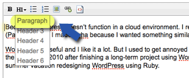
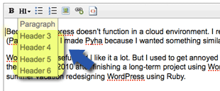

インタビューに答える要領で答えてみてください。英語版・日本語版があるので名前や肩書きは英語で書き、質問には英語・日本語を併記すると便利です。写真は幅640ピクセル以上の大きなものを指定するとぴったりフィットします。
ブラウザから使いたい写真を選択。その写真の上で右クリック。
写真（URL）のボックスにペースト。
 あらかじめ入力した文章内の段落を作りたい行に カーソルを置いた状態で「H1」ボタンをクリックし、 開いたタブ内にある「Paragraph」を選択。その行が段落として表示されます。
 あらかじめ入力した文章内の見出しにしたい行にカーソルを置いた状態で「H1」ボタンをクリックし、 開いたタブ内にある「h3」〜「h6」を選択しますと、 その行が見出しとして表示されます。h3 … 大見出しh4 … 中見出しh5 … 小見出しh6 … さらに小さな見出し
文章内の強調したい部分を選択した状態で「B」ボタンをクリック。その部分の文字が太字で表示されます。
何も選択していない状態で、か をクリックするとリストが作れます。 文章を入力後に「enter（改行）」キーを押すとリスト項目が増え、 空白の状態で二回連続「enter」キーを押しますと、リストではない文章の入力に戻ることができます。 … 番号無しリスト … 番号付きリスト
をクリックすると 画像を挿入することができます。を押した後に表示されたボックスに上記の写真の登録と同じ要領で、 画像のURLを入力してください。 画像を挿入する場合、挿入した画像を段落で囲いますと、見た目が整います。
リンクにしたい部分を選択した状態で、をクリックすると その文字にリンクを挿入することができます。 を押した後に表示されたボックスにリンク先のURLを入力してください。
をクリックすると 入力した内容をHTMLソースで確認することが出来ます。
Twitterにつぶやく